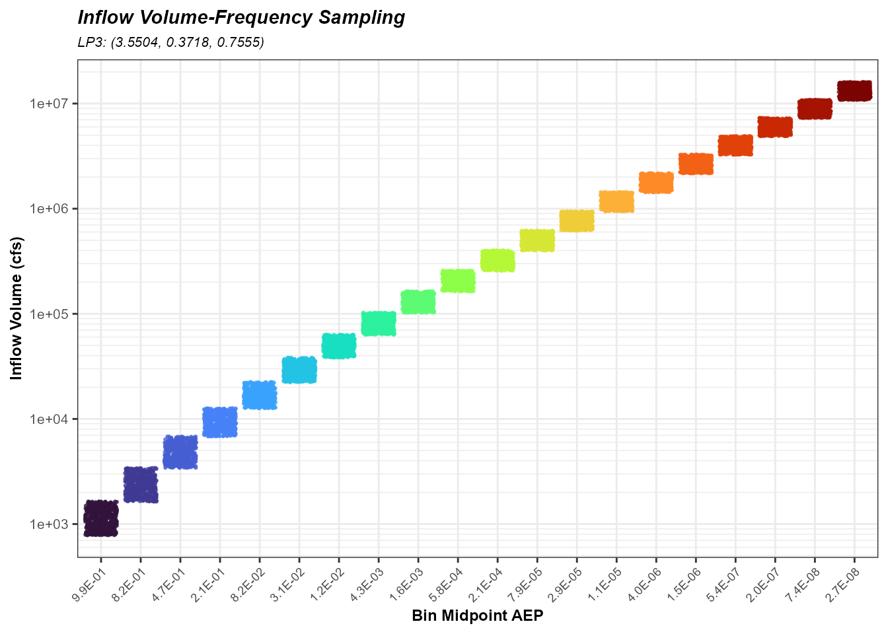
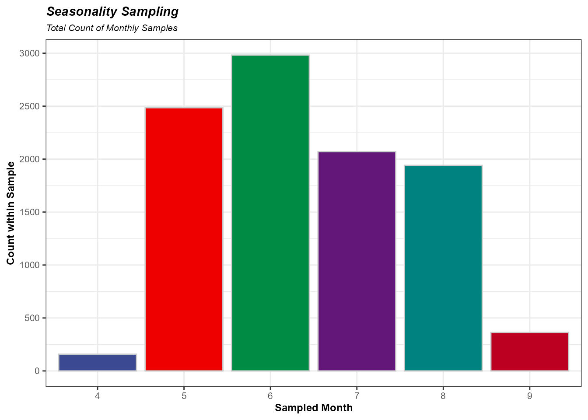
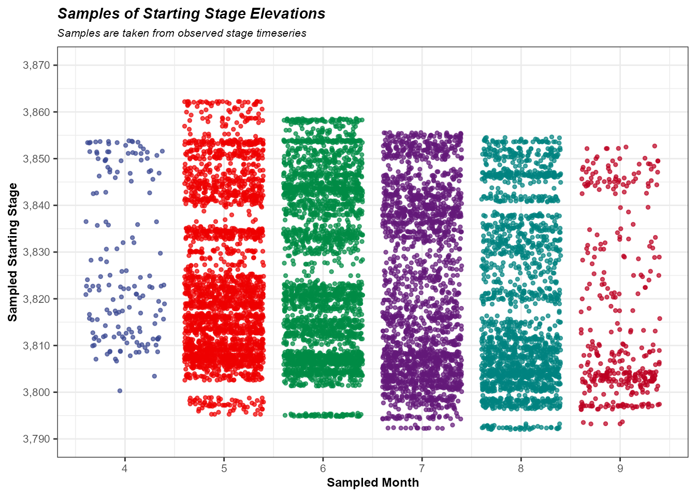
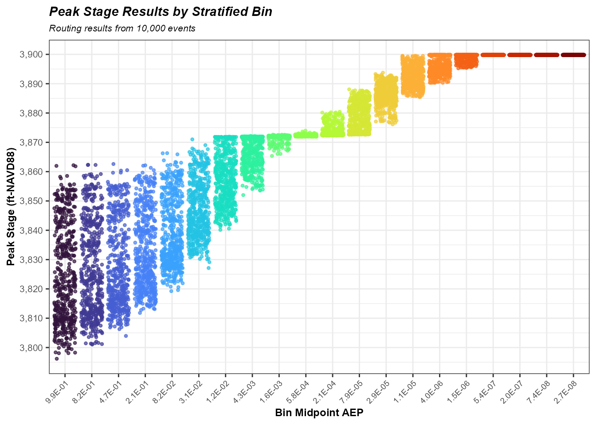
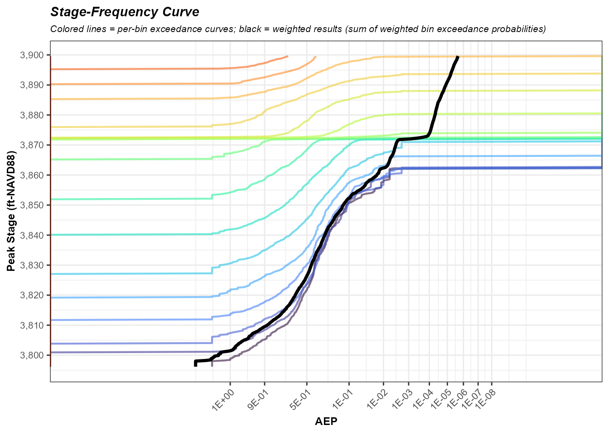

Conceptual Computation of an rfaR Realization
Source:vignettes/rfaR-Realization-Conceptual.Rmd
rfaR-Realization-Conceptual.RmdExecutive Summary
RMC-RFA produces a reservoir stage-frequency curve with uncertainty bounds by utilizing a deterministic flood routing model while treating the inflow volume, flood hydrograph shape, seasonal occurrence, and antecedent reservoir stage as uncertain variables rather than fixed values. To quantify both the natural variability and epistemic uncertainty in reservoir stage-frequency estimates, RMC-RFA employs a two-looped, nested Monte Carlo methodology.
The inner loop — defined here as a realization — simulates natural variability by routing 10,000 individual flood events through the reservoir, each with randomly sampled starting stage, hydrograph shape, and stratified-sampled inflow volume drawn from the volume-frequency distribution. Together these routed events produce a single stage-frequency curve estimate. The outer loop propagates epistemic uncertainty by repeating this process across many realizations, each conditioned on a different set of volume-frequency distribution parameters drawn from the posterior.
This document walks through a single realization in detail. Understanding one realization is the key to understanding the full simulation: the outer loop simply repeats this process with a different parameter set each time. The walkthrough covers the stratified sampling procedure, random sampling of starting stage and hydrograph shape, and calculation of stage exceedance probabilities — steps that are common to all simulation types. The full uncertainty simulation conducts 10,000 realizations, each comprising 10,000 flood events (100 million routing operations total), while the expected value simulation conducts 10,000 realizations, each using a one of the 10,000 BestFit parameter sets.
Note: Users with coding experience may find the loops in this script “inefficient”. This purpose of this step-by-step guide is to provide a replicable guide to the realization process.
rfaR Analysis Summary
A full uncertainty run in rfa_simulate() is comprised of
10,000 realizations. Each realization is compromised of 10,000 reservoir
routing computations (simulations) using the following:
Stratified samples (10,000 samples comprised of 20 bins with 500 events each) from an inflow volume-frequency curve (VFC). The VFC is estimated using one parameter set
10,000 Seasonality samples represented by the month
10,000 Starting stage samples, dependent on the sampled month
Hydrograph Shape, scaled to sampled inflow volume
Modified-Puls routings to obtain peak stages and/or peak discharge
The subsections below will step through an rfaR realization. These
sections represent modules and functions contained in
rfa_simulate().
Flow-Frequency Stratified Sampling
Stratified Bins Definition & Set-Up
Stratified sampling is used instead of simple random sampling because
reliable estimates of exceedance probabilities far into the tail of the
distribution — events with AEPs of 1/10,000 or rarer — are required.
Simple random sampling would require an impractically large number of
events to adequately populate the tail. Instead, the frequency axis is
divided into Nbins equal-probability bins, and
Mevents are sampled uniformly within each bin. This ensures
the tail is well-represented without artificially inflating the total
number of routing operations.
The bin weights (ords$Weights) reflect the true
probability mass that each bin represents. These weights are applied
later to reconstruct the true exceedance probability from the stratified
sample, correcting for the fact that rare-event bins were intentionally
oversampled relative to their actual frequency of occurrence.
ords <- stratified_sampler(Nbins = 20,
Mevents = 500,
dist = "ev1")Construct a Probability Matrix from the Stratified Bins
The z-variate matrix translates each stratified sample into a
standard normal deviate. Each column corresponds to one bin; each row is
one of the Mevents random draws within that bin. Because
EV1 (Gumbel) space is used for stratification, the bin boundaries
(Zlower, Zupper) are in defined in
Gumbel-reduced-variate space, and events are drawn uniformly within each
bin. The resulting z_matrix is an Mevents ×
Nbins matrix of z-variates, with each column densely and
uniformly populated across its corresponding probability/z-variate
range.
z_matrix <- matrix(ncol = ords$Nbins, nrow = ords$Mevents)
# Using EV1
for (i in 1:ords$Nbins){
# Lower Bin Boundary (prior bin's upper boundar)
bin_lower <- ords$Zlower[i]
# Upper Bin Boundary
bin_upper <- ords$Zupper[i]
# Vector of random values
z_matrix[,i] <- (bin_lower + (runif(500, min = 0, max = 1))*(bin_upper - bin_lower))
}Construct a Matrix of Corresponding Flow Quantiles
The Z-variates are converted to inflow volumes using the LP3
(Log-Pearson Type III) quantile function. The conversion routes through
normal probability space: Z-variates → normal CDF (pnorm) →
LP3 quantile (qp3). The result is Q_matrix,
which has the same dimensions as z_matrix and each cell
holds an inflow volume. Each inflow volume corresponds to a sample from
the inflow volume-frequency distribution.
The parameter set used here (meanlog,
sdlog, skewlog) represents a single draw from
the posterior distribution of LP3 parameters — one parameter set for
this realization.
meanlog <- 3.550399
sdlog <- 0.3717982
skewlog <- 0.7555138
Q_matrix <- 10^qp3(pnorm(z_matrix), meanlog, sdlog, skewlog)
Define the Number of Simulations (Routings)
The total number of inflow events in this realization is the product of the number of bins and the number of events per bin — in this case, 20 × 500 = 10,000. This is the number of reservoir routing simulations that will be executed in the realization. The default is 10,00 simulations (equal to the number of parameter sets). Currently, there is no option to change the number of simulations or realizations.
Sample Seasonality
The month of flood occurrence is sampled randomly using historical relative frequencies from the site’s seasonal record. This captures the seasonal pattern of large inflow or high stage events. The sampled month is used in the next step to sample an observed starting reservoir stage that is climatologically consistent with the inflow timing, preserving the correlation between stage elevation and seasonality.
The sample is a pre-allocated vector/sequence of months that is
Nsims long.
InitMonths <- sample(1:12, size = Nsims, replace = TRUE, prob = jmd_seasonality$relative_frequency)
UniqMonths <- sort(unique(InitMonths))
Sample Starting Stage
The antecedent reservoir stage for each event is sampled conditionally on the sampled month of occurrence. Observed stages are sampled from the month they occurred, using the sampled flood month in the step prior. This ensures that starting conditions are seasonally realistic — an event sampled in April will begin from a stage elevation sampled from April in the observed stage time series. The starting stages are therefore sampled proportionately to their historic frequency of occurrence.
The sample is a pre-allocated vector/sequence of starting stages that
is Nsims long.
InitStages <- numeric(Nsims)
stage_ts <- jmd_wy1980_stage
stage_ts$months <- lubridate::month(lubridate::mdy(stage_ts$date))
for (i in 1:length(UniqMonths)) {
sampleID <- which(InitMonths == UniqMonths[i])
InitStages[sampleID] <- sample(stage_ts$stage[stage_ts$months %in% UniqMonths[i]],
size = sum(InitMonths == UniqMonths[i]), replace = TRUE)
}
Sample Hydrograph Shape
The shape of the flood hydrograph is sampled randomly from a selection of historical and synthetic hydrographs. Each hydrograph in the library is assigned a weight (default weights are uniform); the sampled shape is then scaled to match the flood volume drawn from the LP3 distribution.
hydrographs <- hydrograph_setup(jmd_hydro_apr1999,
jmd_hydro_jun1921,
jmd_hydro_jun1965,
jmd_hydro_jun1965_15min,
jmd_hydro_may1955,
jmd_hydro_pmf,
jmd_hydro_sdf,
critical_duration = 2,
routing_days = 10)
hydroSamps <- sample(1:length(hydrographs), size = Nsims, replace = TRUE,
prob = attr(hydrographs, "probs"))Conduct Reservoir Routing Simulations
With all random variables sampled, the routing loop executes the
Modified Puls method for each of the Nsims events. For each
event, three inputs are combined: (1) the inflow hydrograph, scaled from
the sampled shape to match the LP3-derived inflow volume; (2) the
initial reservoir elevation drawn for that event; and (3) the
reservoir’s storage-outflow relationship (resmodel_df). The
Modified Puls method numerically solves the storage equation at each
timestep, tracking the reservoir elevation through the duration of the
flood. Only the peak stage reached during the event is retained in this
example, but peak discharge is also available.
The loop is structured to preserve the bin (column) alignment of
Q_matrix: event (i, j) in
peakStage corresponds to bin j and event
i. Maintaining this alignment is essential for correctly
applying the stratified bin weights during the stage-frequency
estimation.
peakStage <- matrix(NA, nrow = nrow(Q_matrix), ncol = ncol(Q_matrix))
realiz <- 0
for (i in 1:nrow(Q_matrix)) {
for (j in 1:ncol(Q_matrix)) {
# Keeps the indices lined up - necessary for the weights later
realiz <- (i - 1) * ncol(Q_matrix) + j
# Hydrograph shape
hydrograph_shape <- hydrographs[[hydroSamps[realiz]]][,2:3]
# Hydrograph observed volume
obs_hydrograph_vol <- attr(hydrographs[[hydroSamps[realiz]]],"obs_vol")
# Scale hydrograph to sample volume
scaled_hydrograph <- scale_hydrograph(hydrograph_shape,
obs_hydrograph_vol,
Q_matrix[i,j])
# Route scaled hydrograph
tmpResults <- mod_puls_routing(resmodel_df = jmd_resmodel,
inflow_df = scaled_hydrograph,
initial_elev = InitStages[realiz],
full_results = FALSE)
# Record results
peakStage[i, j] <- tmpResults[1]
}
}Realizaton Results
Determine Min and Max Stages
The range of routed peak stages defines the domain over which the realization stage-frequency curve will be estimated. All subsequent exceedance probability calculations (within the realization) are bounded by these values.
Define Exceedance Stages
A vector of stage thresholds is constructed by stepping evenly &
incrementally from the minimum to the maximum peak stage across the
number of events in each bin (Mevents). Each threshold in
stage_vect represents a candidate stage level at which
exceedance probability will be computed, forming the vertical axis of
the stage-frequency curve.
For consistency with code chunks, the candidate stages in
stage_vect can be referred to as “exceedance stages”. Note
that the vector of exceedance stages can be any length (ex.
n_exceedance_stages could be 1,000).
n_exceedance_stages <- ords$Mevents
stage_vect <- rep(NA, n_exceedance_stages)
for (b in 1:(n_exceedance_stages)){
# Min Stage
if(b < 2){
stage <- min_stage
# Incrementally calculate the next exceedance stage
}else{
stage <- stage_vect[b-1] + (max_stage - min_stage)/(n_exceedance_stages)
}
stage_vect[b] <- stage
}Count Exceedances & Relative Frequencies
For each bin (column) of peakStage and each exceedance
stage (exceedance_stage), the number of events with peak
stages greater than the exceedance stage is totaled and divided by the
number of events. This is the probability of exceeding a stage, given
that the inflow volume was drawn from that inflow volume-frequency bin.
The result is stored in stage_exceedance_matrix, with rows
corresponding to exceedance stages in stage_vect and
columns corresponding to stratified bins.
The accompanying graphic illustrates this process. In each bin, the
number of stages exceeding stage_vect[1] is summed by
stage_exceed_count. This is then divided by the number of
routed events in the bin (mstages) to represent a
probability of exceedance (stage_exceed_prob). This
processes is repeated for each exceedance stage in
stage_vect, within each bin.
stage_exceedance_matrix <- matrix(nrow = length(stage_vect), ncol = ncol(Q_matrix))
for(m in 1:ncol(peakStage)){
# Get Bin of peak stages, each represented by m event
mstages <- peakStage[,m]
for(n in 1:length(stage_vect)){
# Get Stage
exceedance_stage <- stage_vect[n]
# How many exceedances in Bin
stage_exceed_count <- sum(mstages > exceedance_stage)
# Exceedance Prob in Bin
stage_exceed_prob <- stage_exceed_count/length(mstages)
# Save to exceedance matrix
stage_exceedance_matrix[n,m] <- stage_exceed_prob
}
}
Estimate Exceedance Probabilities using Stratified Bin Weights
The stage exceedance probabilities from each bin are combined using the stratified bin weights. The weighted sum of bin-level exceedance probabilities estimates the annual exceedance probability (AEP) at a given exceedance stage. The weighted sum is to correct for the intentional oversampling of rare/less-frequent inflow events. For more on this see the Law of Total Probability.
The result is stage_result which is the stages from
stage_vect and their corresponding AEP estimates. This is
the realization stage-frequency curve. This curve can be interpolated
using stages or AEPs.
stage_aep_vect <- rep(NA,length(stage_vect))
for(m in 1:nrow(stage_exceedance_matrix)){
# Grab row of exceedances
stage_exceedance_probs <- stage_exceedance_matrix[m,]
# Sum the dot product of exceedances and weights
stage_aep <- sum(stage_exceedance_probs*ords$Weights)
#save to vector
stage_aep_vect[m] <- stage_aep
}
stage_result <- tibble(
AEP = stage_aep_vect,
Z_var = qnorm(1-stage_aep_vect),
Gumb = -log(-log(1 - AEP)),
Stage = stage_vect)